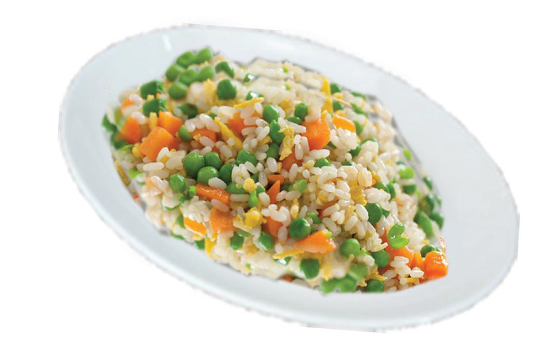

Food and Human Nutrition
Form Two
4. Fry the onions until they become soft and add rice. Stir for 4 minutes over medium heat.
5. Add green peas, enough boiled water and salt. Then, allow them to simmer.
6. When no water is seen above the rice, add sliced carrot and mix it well. Put it in a moderately heated oven or reduce the cooking heat. Then, allow it to dry thoroughly.
7. Serve it on a plate as shown in Figure 2.4.

Figure 2.4: Vegetable rice
Maize and kidney beans
Ingredients (serve 4 people)
250 dehulled maize
150 g beans
100 ml cooking oil
1 carrot
1 green pepper
1 onion
1g salt
water
5 g curry powder or turmeric (optional)
350 ml coconut milk or 100 g ground groundnuts (optional)
Method
1. Wash the maize and then bring to boil for 20-30 minutes.
2. Add washed beans to the boiling maize and continue boiling the mixture until it is soft and fully cooked.
3. Peel and slice the onions and carrot.